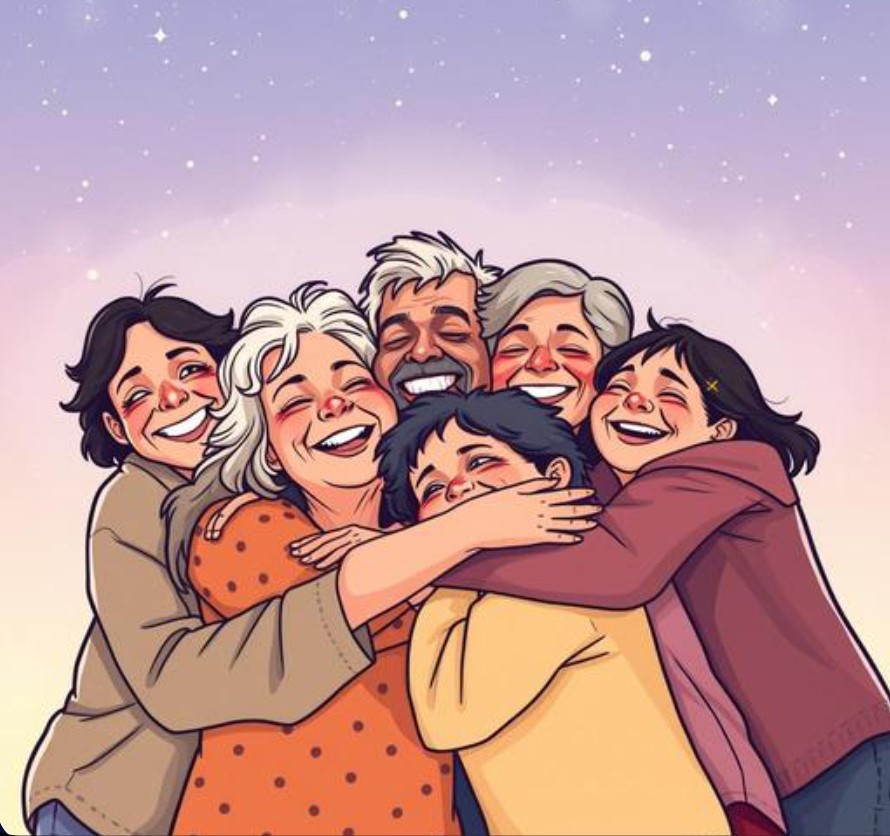

Adoptive families often talk about two separate, equally real days: the birthday, which marks when a child came into the world, and what many families call "Gotcha Day" or "Family Day" — the day the adoption became official, the day a family that chose each other became legally and permanently real.

Neither day replaces the other. Birthdays still matter, still get cake, still get celebrated the way every kid's birthday does. But adoption day carries its own distinct weight — it marks the day a different kind of family decision became permanent, often after months or years of paperwork, waiting, and uncertainty that most outsiders never fully see.
Why Adoption Day Deserves Its Own Recognition
Family therapists who work specifically with adoptive families have long emphasized the importance of acknowledging adoption as part of a child's story, rather than treating it as something to minimize or smooth over. Research on adoptee identity consistently finds that children do better, long-term, when their adoption story is treated with open, age-appropriate honesty and even celebration — not silence, and not over-dramatization either, just honest acknowledgment that this is part of how the family came to be.
Marking the day deliberately — with a tradition, a small celebration, anything consistent — gives kids a concrete, positive frame for a part of their story that some children otherwise might feel uncertain or confused about as they get older.
What Families Actually Do to Mark It
Adoptive families have developed all kinds of traditions: an annual dinner at a meaningful restaurant, a yearly letter to the child about how the family came together, a small gift exchange separate from the birthday entirely so the two days stay clearly distinct.
A Permanent Marker for the Day a Family Became Whole
A growing number of adoptive families have started using a star on GalaxySpace specifically for this — the adoption date, the family's names, and a message about the day the family officially became a family. It's a small, lasting addition to whatever annual tradition the family already has, something the child can look back on later in life as concrete proof of how intentionally, deliberately chosen they were.
You can create one here — a quiet, permanent way to honor the day a family chose each other, alongside whatever else makes the day special for you.